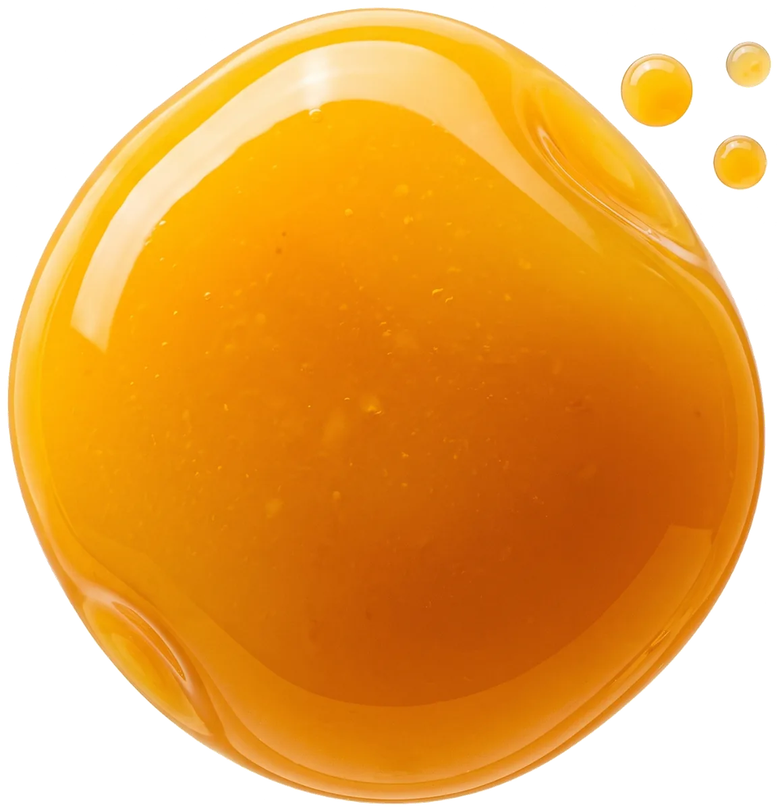
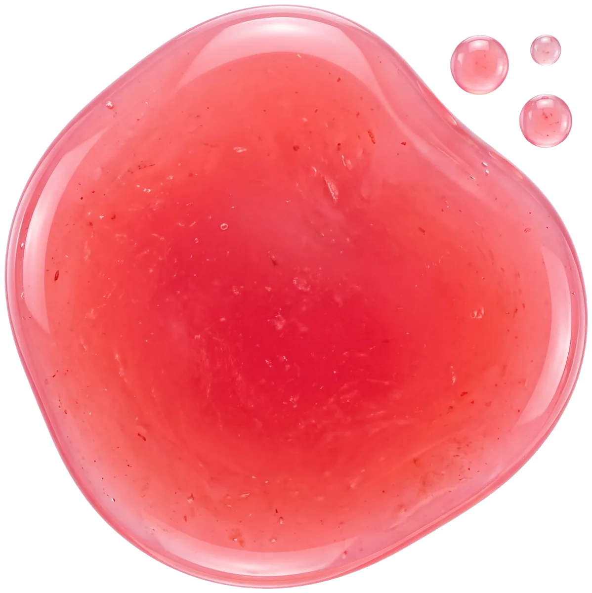

Juice-fill wordmark
- Scene
- 00 loader, 07 outro
- Timing
- 1.5s, power2.inOut, wave loops
You picked Sunburst Stand and Candy Gloss. Both run on a white canvas with your photos and share one scroll choreography. This doc covers each direction's look, assets, motion and transitions. Every demo runs live, and every transition can be scrubbed frame by frame.
A 1970s juice stand in the sun: a sunset-filled sun disc, slow-turning rays, wave bands and retro type with stacked shadows. Warm, bouncy and nostalgic.

A glossy pop studio: wobbling juice blobs, lacquered fruit, bubbles that pop and drips that stretch. Squishy, juicy and loud.

Both directions follow the same order, so the build is shared. Only the look and the transitions between scenes change.
Scroll inside the frame once it's active. Full screen shows it at true size.
A white canvas carries the layout. Color comes from the sun, the waves, the fruit and the type.
Hot pinkHeadlines, CTA, accents #FF2E7E
TangerineShadow layer, juice #FF6A13
SunflowerThe sun, shadow layer #FFC300
LimeGreens flavor, leaves #7ED321
CocoaBody text, button base #3B1E08
CreamPills, cards, tints #FFF1DC
Squeezed sunshine.
Pressed, never cooked.
Body copy in Rubik 500. It's round and friendly, and its weight axis drives the manifesto's swell from 300 to 900.
Your photos, cut out to transparent WebP. Hover a tile to see how it behaves on the page.
The building blocks, one per tile. They play when they scroll into view.
Six ways to move between scenes, all built from your assets. Drag to scrub, or press play.
The rays speed up and a white circle opens out of the sun, carrying "Pick your sunshine" into the product row. Scrubbed over the last 50% of the hero pin.
The camera dives into the sun disc. The sunset photo fills the screen and burns out to white, and the next scene fades up. Good for hero → products.
A scalloped striped awning rolls down like a shop shutter, then rolls up on the juice stand. Good for manifesto → outro.
The orange half spins in from the corner and fills the screen, then you pass through its white center into the next scene. Good for products → manifesto.
The hero's three wave bands rise up and over the screen in stagger, and a final white wave lifts the next scene in. The most on-brand option.
The sunburst splash explodes out of the cup toward the camera, and the next scene shows through as it passes. Quick and punchy, so best as a cut between small sections.
What runs where, with the strongest alternates from the lab.
| Moment | In the prototype | Alternates | Scroll / time |
|---|---|---|---|
| Load | Wordmark fills pink, curtain lifts | None | 1.6s, scroll locked |
| Hero entry | Cup drop + splash + retro letters + fruit fly-in | None | 1.3s |
| Hero → products | Sun iris | Sunset dive, wave rise | Pinned 160vh, last half |
| Flavor to flavor | Giant word swap, accent tint, cups turning | Splash burst on card hover | ~330vh pinned |
| Products → manifesto | Circle reveal from the figure panel | Orange spin-through | First 25% of 380vh pin |
| Manifesto → outro | Free scroll, wordmark fill, postcard reveal | Awning drop onto the stand photo | Free |
All live. Press the button and add to the bag.
Cards sit on cream with a warm shadow. The stage inside each card takes the flavor color and slow rays. Buttons press down onto a cocoa base and spring back.
Orange, yuzu, carrot and a little ginger.
Scroll inside the frame once it's active. Full screen shows it at true size.
White studio, saturated candy accents. Every color has a glossy highlight, and nothing is flat for long.
WatermelonHeadline, CTA #FF3D6E
Orange popOrange world #FF7A00
LimeLime world #B6F500
SunshineMango world #FFD60A
LicoriceText #2A0A1C
Bubblegum tintPills, tracks #FFF0F4
Juicy & glossy.
Body copy in Manrope. On hover, headings squash and stretch through the width axis, so the type itself feels squishy.
Your Candy Gloss set plus the shared cup photos. Hover a tile to see how it behaves.
Squash, stretch, wobble and pop. Several tiles respond to your pointer, so try poking them.
Six candy transitions from your assets. Drag to scrub, or press play.
Four juice blobs sweep across the screen in alternating directions while the hero fades behind them, so the next scene arrives on white.
Pink juice drips down from the top edge and floods the screen, then drains away downward to reveal the next scene.
Bubbles float in and swell until they cover the screen, then pop one by one, each hole showing more of the next scene.
Flavor to flavor: the blob squishes from orange to lime, the tint floods, and the old cup leaves as the new one bounces in.
The squeezed orange blooms, then the camera dives into its juice sphere until it fills the screen, and the manifesto comes up through it. Good for products → manifesto.
A giant ribbon of juice swoops diagonally across the screen, and the next scene is revealed in its wake. Good for manifesto → outro.
What runs where, with the strongest alternates from the lab.
| Moment | In the prototype | Alternates | Scroll / time |
|---|---|---|---|
| Load | Wordmark fills watermelon, a blob spins in | Bubbles float up and pop the curtain away | 1.6s, scroll locked |
| Hero entry | Jelly cup landing + blobs wobble + fruit fly-in | None | 1.3s |
| Hero → products | Blob pass | Bubble pop, goo drip | Pinned 160vh, last half |
| Flavor to flavor | Color-world morph, ribbon draws in | None | ~330vh pinned |
| Products → manifesto | Circle reveal | Squeeze zoom | First 25% of 380vh pin |
| Manifesto → outro | Drip stretches down, wordmark fills | Ribbon wipe | Free |
All live. Squish the button and tilt the card.
White cards with a hairline blush edge. The stage holds the flavor's juice blob, and the highlight follows the pointer. Buttons are glossy pills that squish on press.


Watermelon, strawberry and beet.
What engineering needs, whichever direction wins.
engine.js (GSAP 3.12 + ScrollTrigger + Lenis, about 40 KB gzipped). Each direction only swaps CSS, markup and a small config: flavors, transition type and easing.